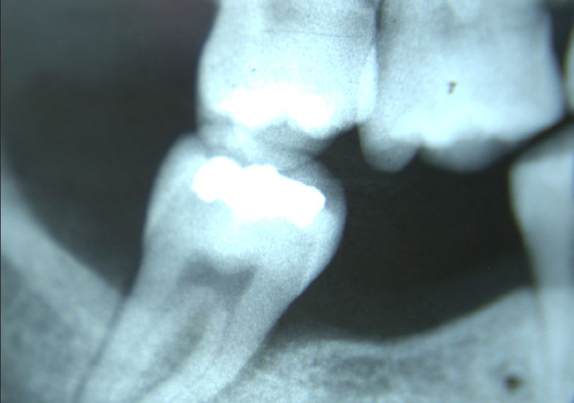

Test Tube Teeth
Teeth may be the first bioengineered organs
Edith Han
Fall 2005

Tooth loss is clearly an important issue for most individuals.
According to Paul Sharpe, PhD, head of the division of craniofacial
biology and biomaterials at the Dental Institute at King’s College in
London, England and Conan Young, PhD, instructor in oral and
developmental biology at the Harvard School of Dental Medicine, after
age 50, the average person will have lost 12 teeth. As adults have only
32 teeth, the average person thus loses over a quarter of his teeth and
often must turn to a prosthetic replacement.
Soon, however, people may no longer have to put up
with prostheses. Dr. Sharpe and Dr. Young have been able to “grow”
teeth for pigs and rats by using endogenous cell signaling pathways. By
carefully manipulating intercellular communication, they forced cells
to rearrange themselves, forming a tooth. Surprisingly, the signaling
pathways can be used to assemble teeth from adult stem cells as well as
existing dental cells. Best of all, bioengineering teeth from an
individual’s own tissues avoids immune rejection and allows for a more
realistic replacement, since tooth size, shape, and color are
genetically determined. Unfortunately, the challenges of growing roots
and identifying ideal raw materials remain. Even so, scientific
progress can be fast, and teeth may be the first successfully
engineered organs.
This discovery has even larger implications than
real replacement teeth for patients; it may bring a new angle to organ
transplants as a whole. If it is possible to use the intrinsic cellular
signals to induce pre-existing cells or adult stem cells to form teeth
on a biodegradable scaffold that replicate their natural 3-D
environment, then it is not too far-fetched to think that in the future
scientists will be able to grow organs such as kidneys, hearts, or
livers from an individual’s own cells.